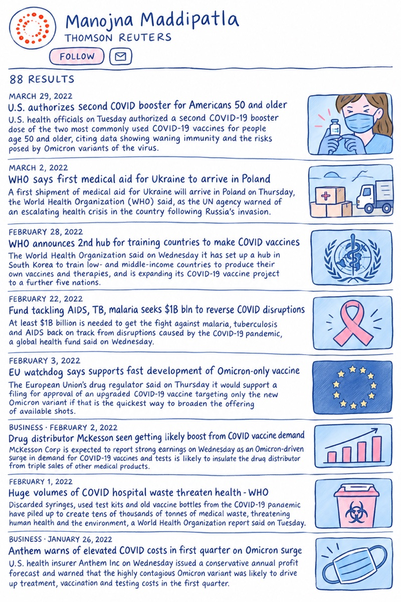
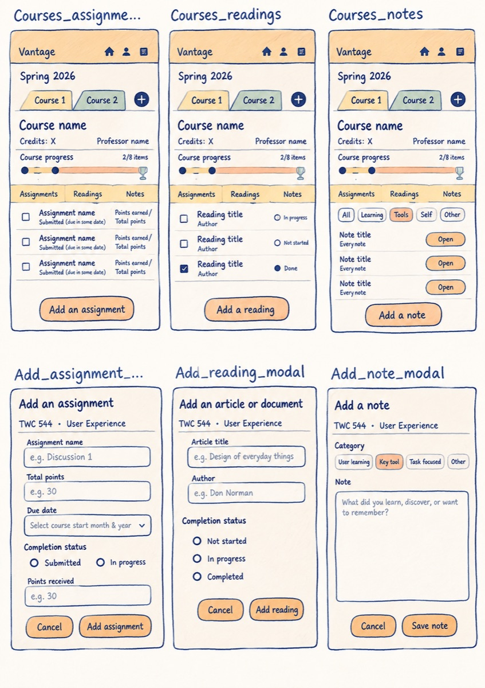
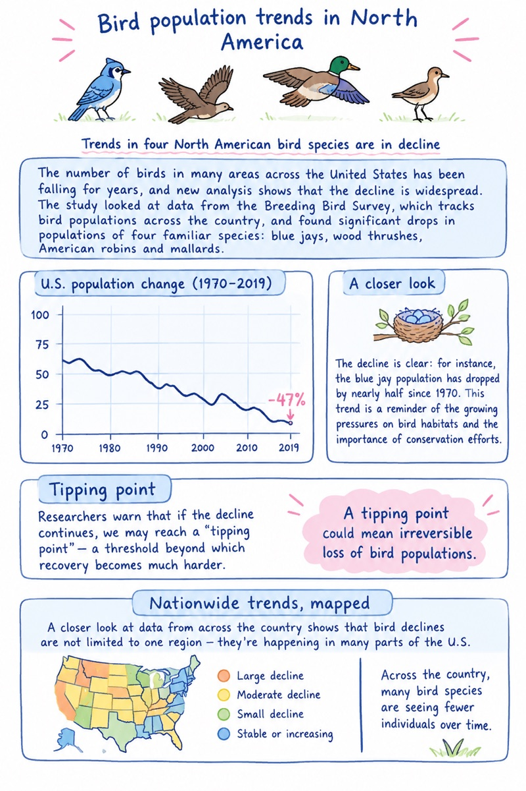
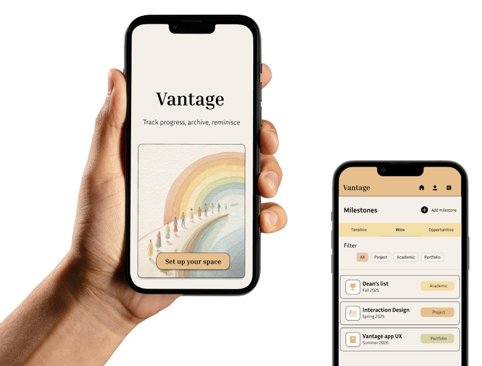
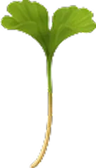
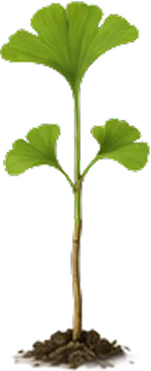
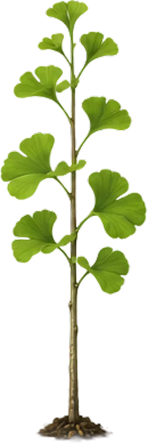
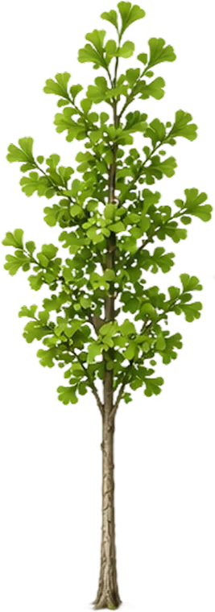
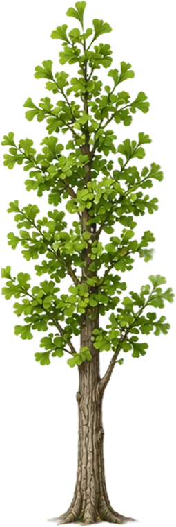
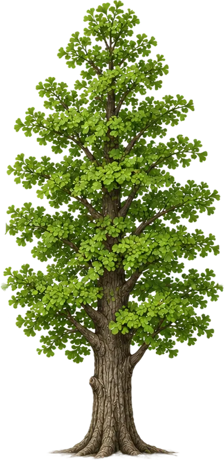

Scout
An AI assistant for style QA, built to catch content drift before it ships.
Role: content design, prompt writing, build
View project: Scout
For eight years, I’ve made complex information clear, from content writing, journalism, and technical writing to UX and content design.
Download resume


An AI assistant for style QA, built to catch content drift before it ships.
Role: content design, prompt writing, build
View project: Scout
App designed to manage courses, readings, and deadlines, without losing sight of the bigger picture.
Role: product and content design
View project: Vantage





The language and structure of a life-reflection journal.
Role: concept, content and product design, build
View project: Parallax
A national park companion app.
Role: concept, product direction, art direction
View project: Nene.png)
A data story tracking North American bird population trends over four decades.
Role: design, development, writing, illustration
View project: Bird populations
An interactive watercolor narrative exploring how visual pacing can carry a story.
Role: product design and content curation
View project: Poppy & EmberCurrently building
Keepsake
A private memory app built from personal experience. Copy system, voice, and UX in progress.
In progressFind my people
A collab app for designers building self-directed portfolio projects.
In progress
Inside the rabbit hole
An interactive data story on five wild rabbit species.
In progress